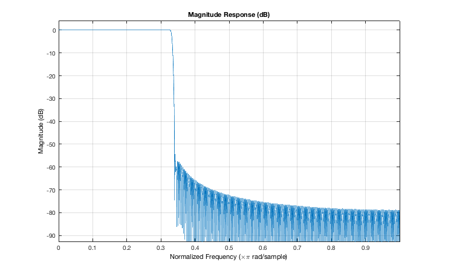
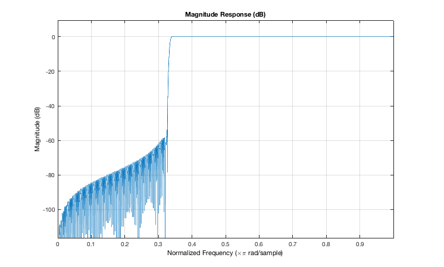
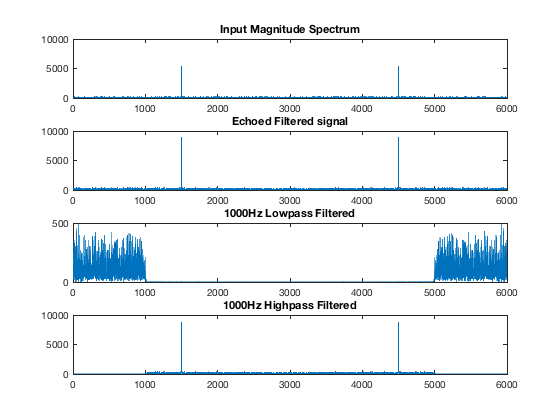

Contents
close; clear; clc;
Part 1 Input = 1500Hz Sine + noize
fs = 6000;
t = linspace(0,1,fs);
f = 1500;
A = 2;
sinWave = A*sin(2*pi*f*t);
Noise = randn(size(sinWave));
Noise = 5*Noise/max(abs(Noise));
x1 = sinWave + Noise;
Part 2 Digital Filter generation and application
echo = zeros(size(t));
echo([1,fs*0.3,fs*0.6,fs*0.9]) = [1,0.7,0.5,0.3];
x2 = conv(x1,echo);
Part 3 Low Pass Filter 1000Hz
fc = 1000;
r = fc/(fs/2);
tap = -256:256;
B = sinc(r*tap).*hamming(length(tap))';
B = B/sum(B);
A = 1;
x3=filter(B,A,x2);
fvtool(B,A);
BB = -B;
BB(257) = 1-B(257);
xx=filter(BB,A,x2);
fvtool(BB,A);
 
Part 4 Plot Magnitude spectra
NFFT = 2^13;
X1 = abs(fft(x1,NFFT));
X2 = abs(fft(x2,NFFT));
X3 = abs(fft(x3,NFFT));
XX = abs(fft(xx,NFFT));
bins = linspace(0,fs,NFFT);
subplot(411), plot(bins,X1),title('Input Magnitude Spectrum');
subplot(412), plot(bins,X2),title('Echoed Filtered signal');
subplot(413), plot(bins,X3),title('1000Hz Lowpass Filtered');
subplot(414), plot(bins,XX),title('1000Hz Highpass Filtered');

Part 5